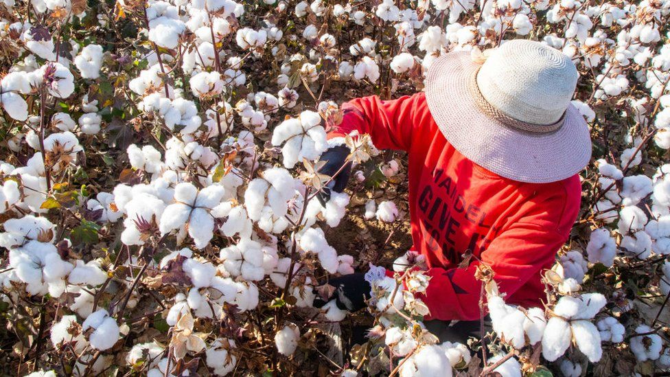
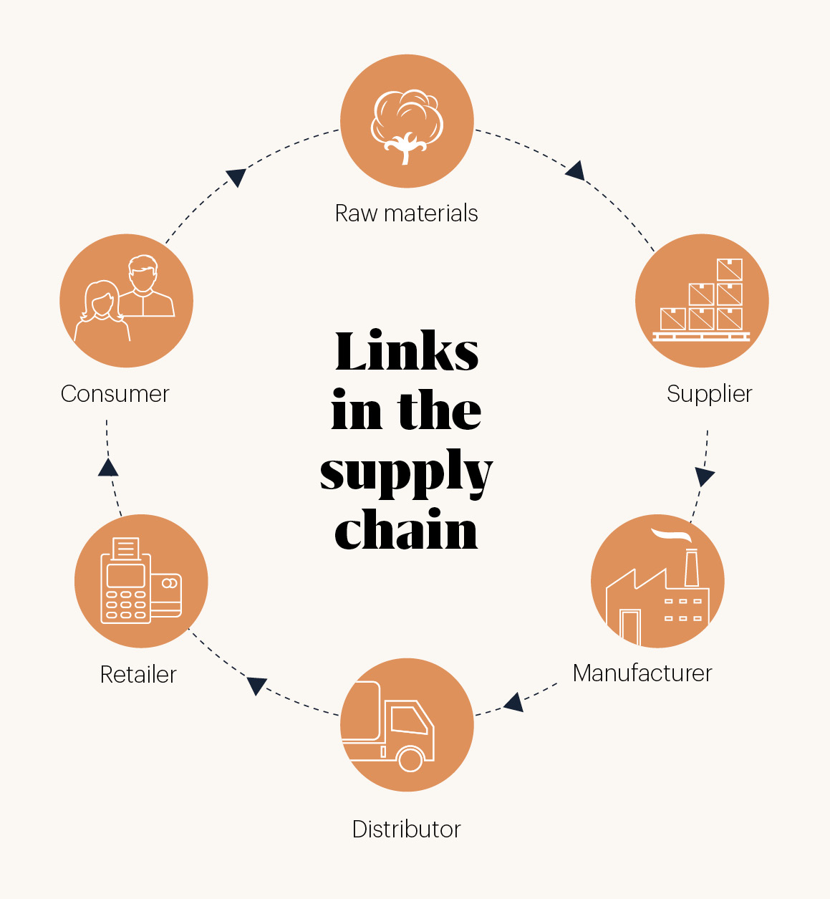

The Fight Against Forced Labor in Fashion
The fashion world is undergoing a seismic shift. Recent regulatory crackdowns on modern slavery in cotton supply chains have sent shockwaves through the industry, urging brands to reevaluate their sourcing practices.

- A staggering $468 billion of garment imports in the G20 are tainted by the shadow of modern slavery. The International Labour Organization (ILO) is currently scrutinizing Turkmenistan for its compliance on forced labor. Meanwhile, allegations of state-imposed forced labor in China's Xinjiang province, where Uyghur Muslims are reportedly subjected to inhumane conditions, have drawn global attention.
- The U.S. has taken a firm stance with the Uyghur Forced Labor Prevention Act (UFLPA) of 2022, banning all goods from the Xinjiang Uyghur Autonomous Region, a major cotton producer. Brands now bear the onus of proving their products are free from forced labor.
- The European Union isn't far behind, with plans for a Ban on Forced Labour regulation and the EU Corporate Sustainability Due Diligence Directive. Countries like Germany, Norway, and France have also implemented laws to ensure transparency and responsibility in supply chains.
- Shameek Ghosh, CEO of TrusTrace, highlights the fashion industry's historic negligence towards supply chain issues. The intricate nature of fashion supply chains and the sheer volume of production mean many brands are ill-prepared for the new regulations. However, Ghosh remains hopeful, stating, "If brands already had this data, the new laws would not be such a big problem for them."
- To aid brands in compliance, TrusTrace is set to launch a digital supply chain mapping tool. This platform will utilize artificial intelligence to automate the verification process, cross-referencing documents with global certification databases.
- In Uzbekistan, a global boycott and concerted efforts by the Cotton Campaign coalition have led to the cessation of state-imposed forced and child labor in its cotton industry. Patricia Jurewicz, CEO of the Responsible Sourcing Network, believes similar campaigns could address issues in Turkmenistan. However, she acknowledges the challenges of boycotting Xinjiang's cotton, given its significant global share.
- Jurewicz remains optimistic, envisioning a future where technologies like DNA identification of cotton yarn origins and enhanced due diligence play pivotal roles. "We're going to start seeing more lawsuits, and then we will see more work being done to implement due diligence through the whole value chain," she predicts.
- In conclusion, the fashion industry stands at a crossroads. With increasing scrutiny and technological advancements, brands have the tools and motivation to ensure ethical sourcing. The question remains: will they rise to the occasion?
